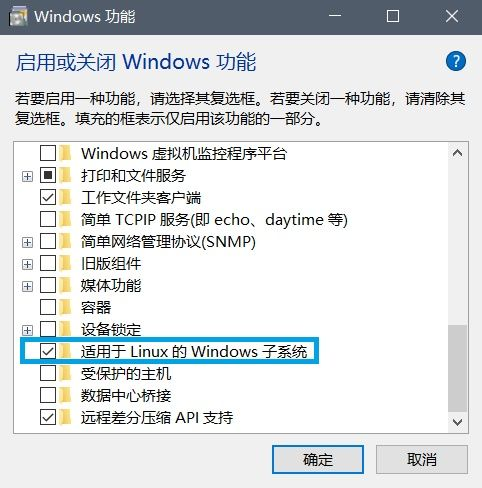
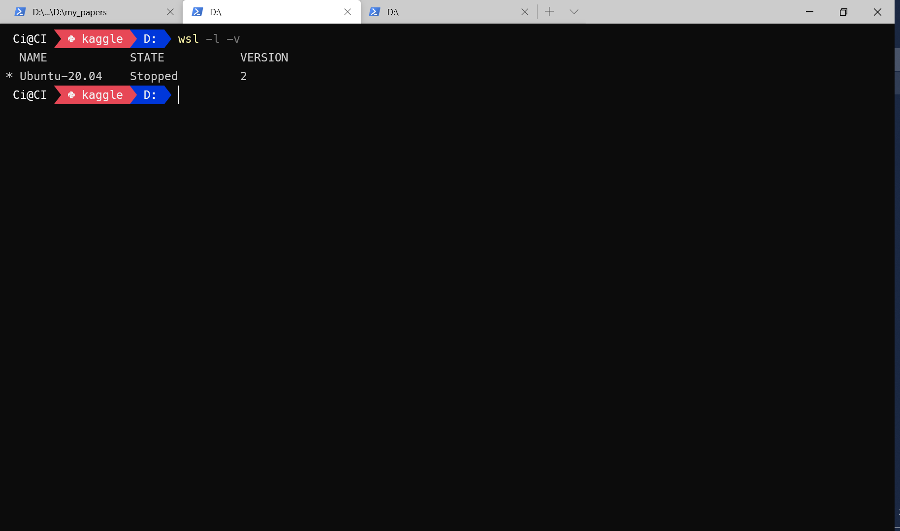
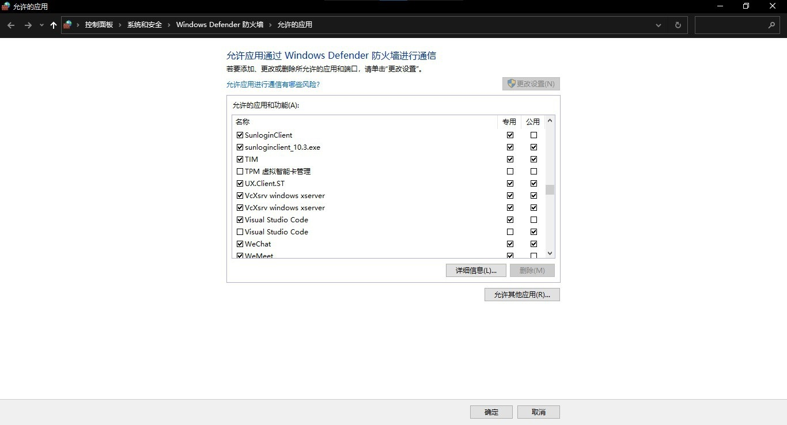
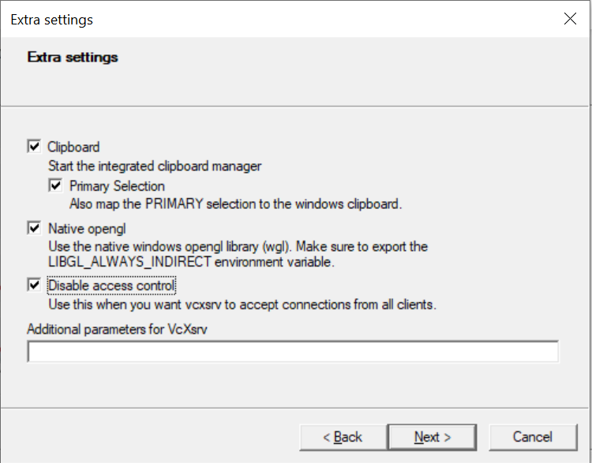
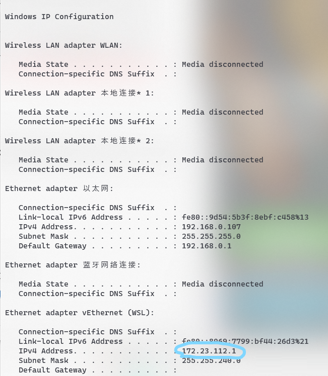
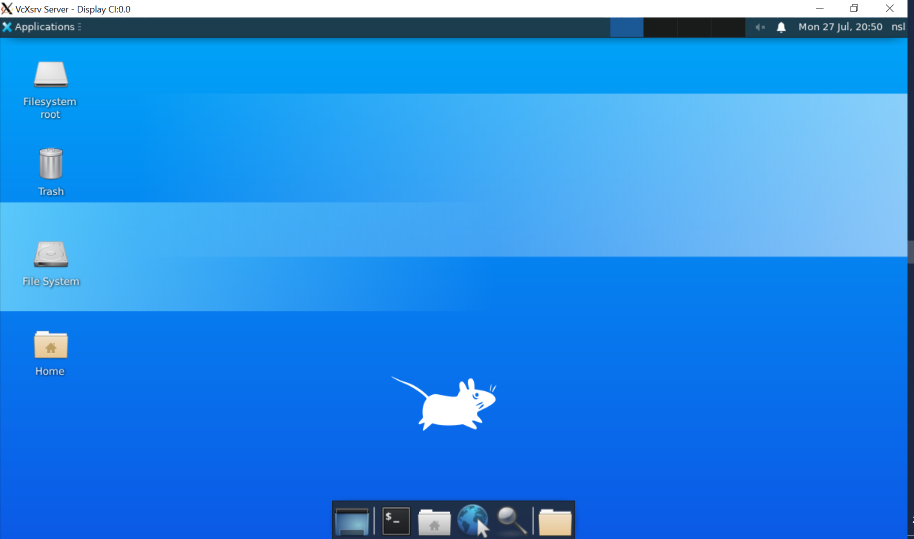
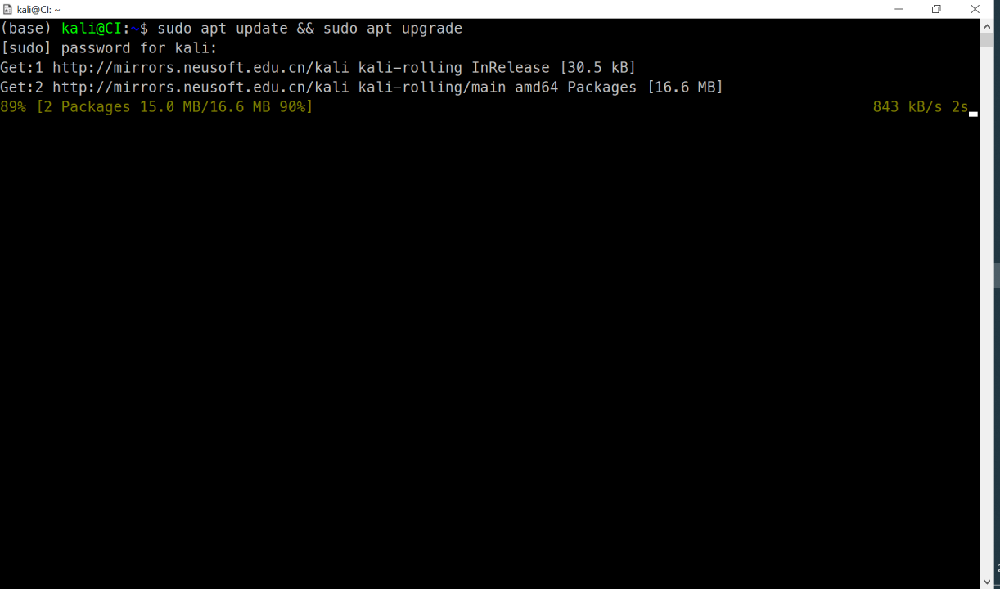
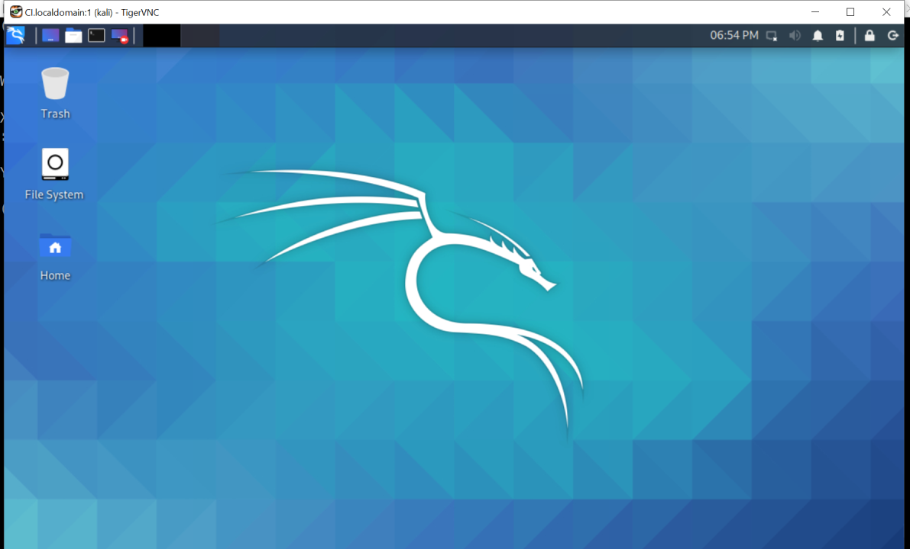
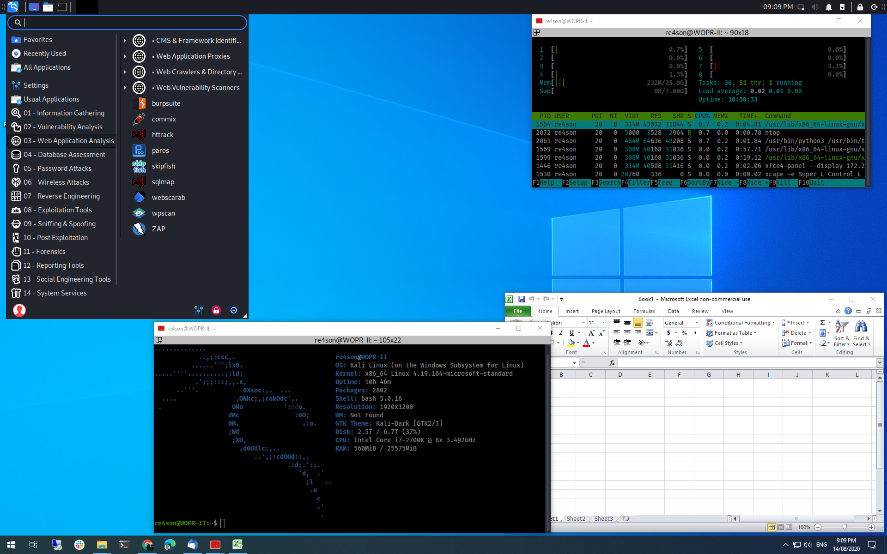
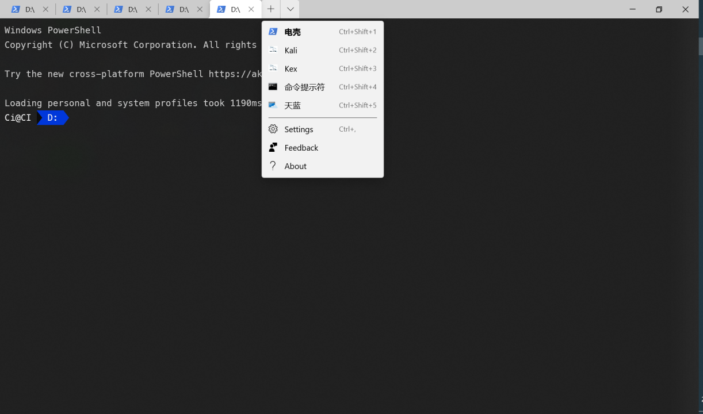

搭建 WSL2 舒适开发环境
Contents
搭建 WSL2 舒适开发环境¶
Windows 下的编程环境经常会给人带来一系列的困扰，如，时隐时现的各种因为环境变量导致的奇怪报错，Python 的不少第三方库不提供 Win 版等。现在，WSL2（Windows Subsystem Linux 2）的出现，让我们有了一种新的选择。WSL2 是一个 Windows 的内置虚拟机，可运行 Linux 环境，一旦有了 Linux 环境，后面的配置不必多说。
1. 安装 WSL2¶
1.1. 开启虚拟机功能¶
在控制面板 -> 程序和功能 -> Windows 功能窗口中勾选适用于 Linux 的 Windows 子系统 功能，点击确定，并按照提示重启电脑。

或以管理员身份在命令行键入
Enable-WindowsOptionalFeature -Online -FeatureName Microsoft-Windows-Subsystem-Linux
中间需要下载一个 WSL2-kernel
若之前没有用过 WSL，则首先需要安装 Windows 10 的 WSL 功能：
dism.exe /online /enable-feature /featurename:Microsoft-Windows-Subsystem-Linux /all /norestart
这部分详情见 WSL2
1.4. 更改软件源¶
打开 sources.list：
sudo vi /etc/apt/sources.list
Ubuntu
deb http://mirrors.ustc.edu.cn/ubuntu/ trusty main restricted universe multiverse
deb http://mirrors.ustc.edu.cn/ubuntu/ trusty-security main restricted universe multiverse
deb http://mirrors.ustc.edu.cn/ubuntu/ trusty-updates main restricted universe multiverse
deb http://mirrors.ustc.edu.cn/ubuntu/ trusty-proposed main restricted universe multiverse
deb http://mirrors.ustc.edu.cn/ubuntu/ trusty-backports main restricted universe multiverse
Kali
deb https://mirrors.ustc.edu.cn/kali kali-rolling main non-free contrib
更新：
sudo apt update && sudo apt update -y && sudo apt upgrade -y
# 清理缓存
sudo apt -y clean && sudo apt -y autoclean && sudo apt -y autoremove
1.5. 网络¶
Powershell 中，管理员执行如下命令
New-NetFirewallRule -DisplayName "WSL" -Direction Inbound -InterfaceAlias "vEthernet (WSL)" -Action Allow
ip route | grep default | awk '{print $3}'
sudo vi /etc/wsl.conf
[network]
generateResolvConf = false
sudo vi /etc/resolv.conf
nameserver 8.8.8.8
1.6. 工具链¶
为了更方便地使用 Linux，墙裂建议安装 Zsh。同时，也推荐安装 Homebrew
安装 Homebrew
/bin/bash -c "$(curl -fsSL https://raw.githubusercontent.com/Homebrew/install/master/install.sh)"
2. Ubuntu¶
2.1. 版本¶
安装完成后，使用微软自家的 Windows-Terminal 打开一个 Ubuntu 标签。

通过如下命令查看版本
wsl -l -v
设置 WSL2 为默认版本
wsl --set-default-version 2
卸载
wslconfig /u Ubuntu-20.04
删除多余的包
sudo apt remove --purge python3
2.2. VcXsrv 的安装和配置¶
这里，我们选择最省心的 VcXsrv，其下载链接为 VcXsrv
也可通过包管理器安装
scoop install vcxsrv
安装完毕之后打开防火墙配置，勾选所有的 Xserver 连接。

启动开始菜单中的 XLaunch，使用默认的 One large window 和 Start no client，在 Extra settings 中勾选第三项

最后，完成配置
2.3. xfce4 的安装和配置¶
进入 WSL2，安装 xfce4
sudo apt install xfce4
打开 /etc/resolve.conf，添加如下语句
[network]
generateResolvConf = false
在 Powershell 中，查询本地 IP
ipconfig

回到 WSL2，将如下语句，添加至 ~/.bashrc 或 ~/.zshrc 末尾
export DISPLAY=$(awk '/nameserver / {print $2; exit}' /etc/resolv.conf 2>/dev/null):0
export LIBGL_ALWAYS_INDIRECT=1
2.4. 启动 GUI¶
重启 bash 或 zsh
# source ~/.bashrc
# source ~/.zshrc
保持 XLaunch 开启，启动 xfce4
startxfce4

3. Kali¶
3.1. 升级¶
由于版本问题，好多人的的子系统还停留在 WSL，而不是 WSL2，由于后者实质上是一个虚拟机。故要启动虚拟化：
dism.exe /online /enable-feature /featurename:VirtualMachinePlatform /all /norestart
wsl -l # 查看 WSL 列表
wsl --set-version kali-linux 2
安装完成后，在 Kali Linux 下，输入如下命令，安装默认工具集
sudo apt update && sudo apt upgrade
sudo apt install -y kali-linux-default

当然你也可以选择安装完整工具集
sudo apt install -y kali-linux-large
3.2. GUI¶
当然为了更好的体验 Kali，我们可以安装官方推荐的 GUI —— Win-KeX。输入如下命令，进行安装。
sudo apt install -y kali-win-kex
安装完毕后，可使用如下命令启动
# 启动
cd ~
kex
# 关闭
kex stop
# 窗口模式
kex --win -s

Win-KeX 还提供了无缝模式
# 无缝模式
kex --sl -s

3.3. Terminal 整合¶
当然，像上面那样启动还是不大方便。我们可以在 Windows Terminal 的配置中，加入一下内容，将 Kali 和 Win-KeX 整合进 Terminal。
{
"list": [
{
"guid": "{46ca431a-3a87-5fb3-83cd-11ececc031d2}",
"hidden": false,
"name": "Kali",
"icon": "file:///c:/users/ci/pictures/icons/kali.png",
"source": "Windows.Terminal.Wsl"
},
{
"guid": "{55ca431a-3a87-5fb3-83cd-11ececc031d2}",
"hidden": false,
"name": "KaTex",
"icon": "file:///c:/users/ci/pictures/icons/kali.png",
// 窗口模式启动
"commandline": "wsl -d kali-linux kex --wtstart -s"
}
]
}

4. WSL2 优化¶
4.1. 压缩¶
随着使用时间的延长，WSL2 占用的硬盘空间会越来越多，这个时候就需要对其文件进行压缩。方法如下
wsl --shutdown
# open window Diskpart
diskpart
select vdisk file="C:\Users\Ci\AppData\Local\Packages\KaliLinux.54290C8133FEE_ey8k8hqnwqnmg\LocalState\ext4.vhdx"
# select vdisk file="C:\Users\Ci\AppData\Local\Packages\CanonicalGroupLimited.Ubuntu20.04onWindows_79rhkp1fndgsc\LocalState\ext4.vhdx"
attach vdisk readonly
compact vdisk
detach vdisk
4.3. Bugs¶
The attempted operation is not supported for the type of object referenced.
sudo netsh winsock reset